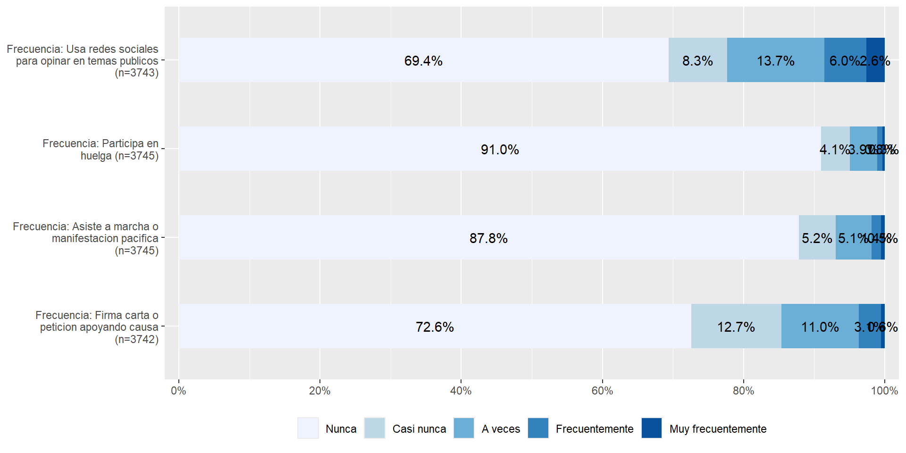
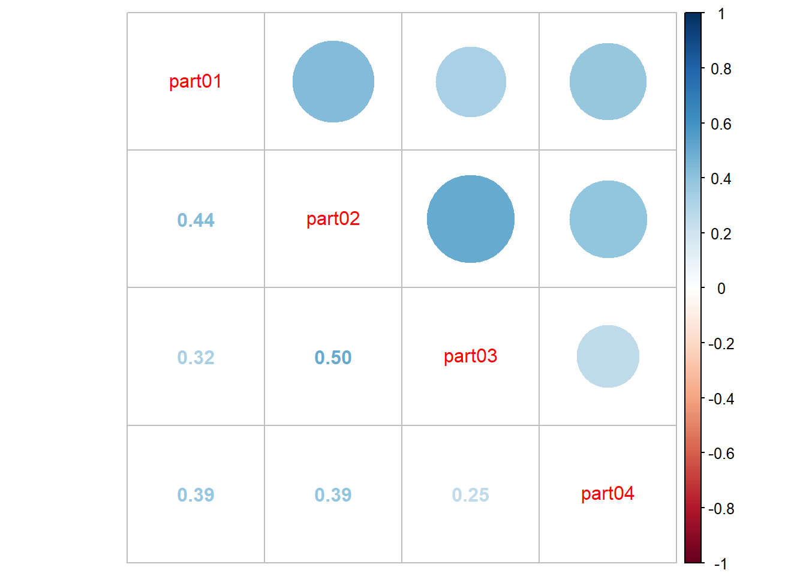
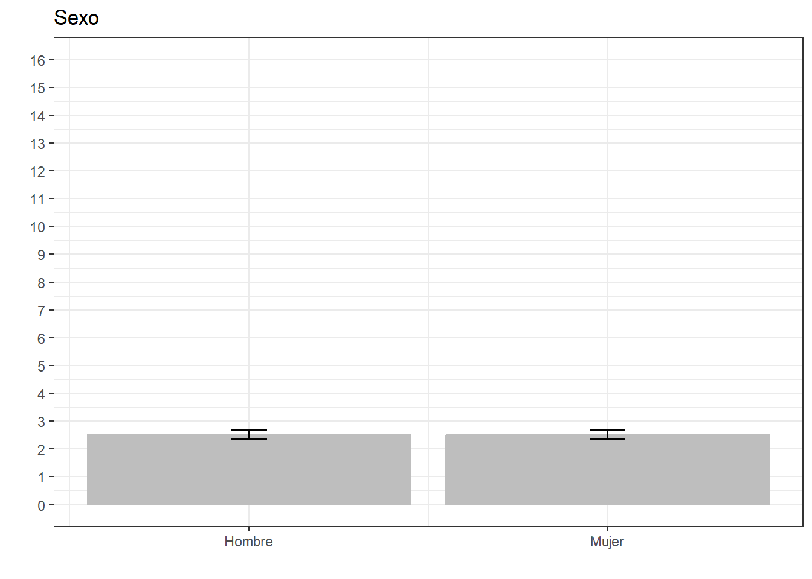
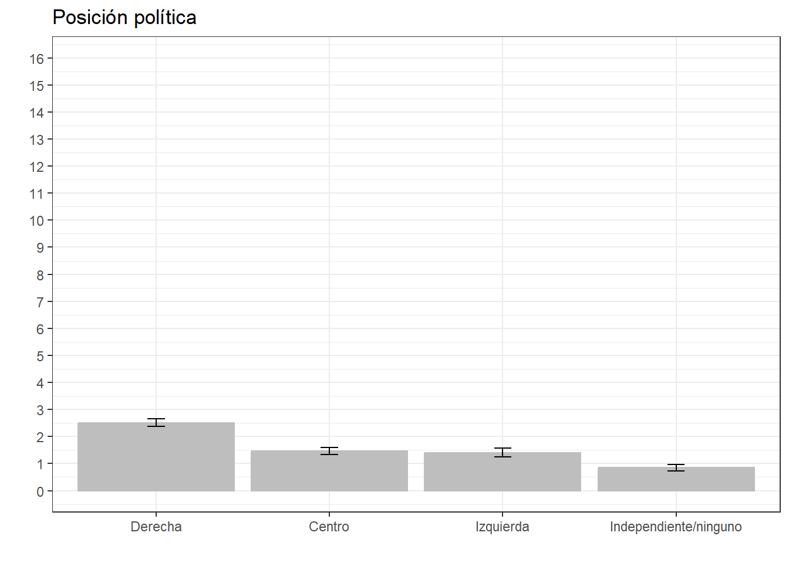
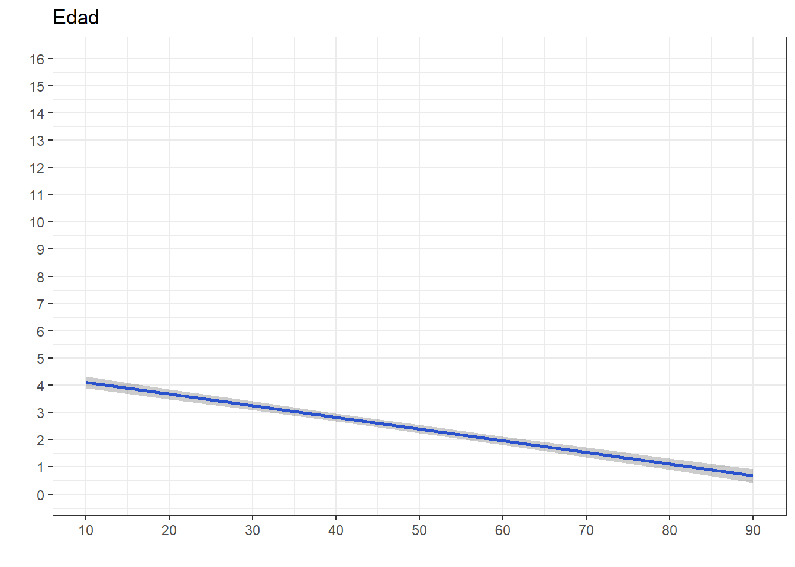
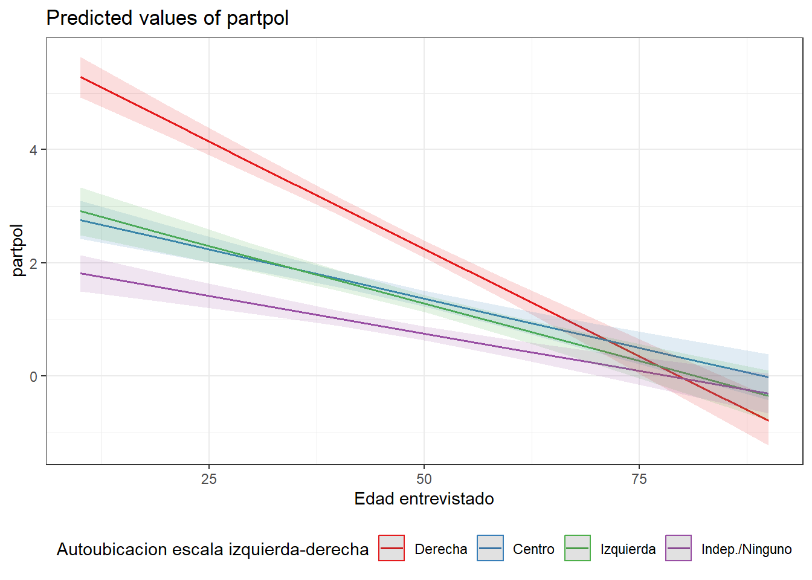
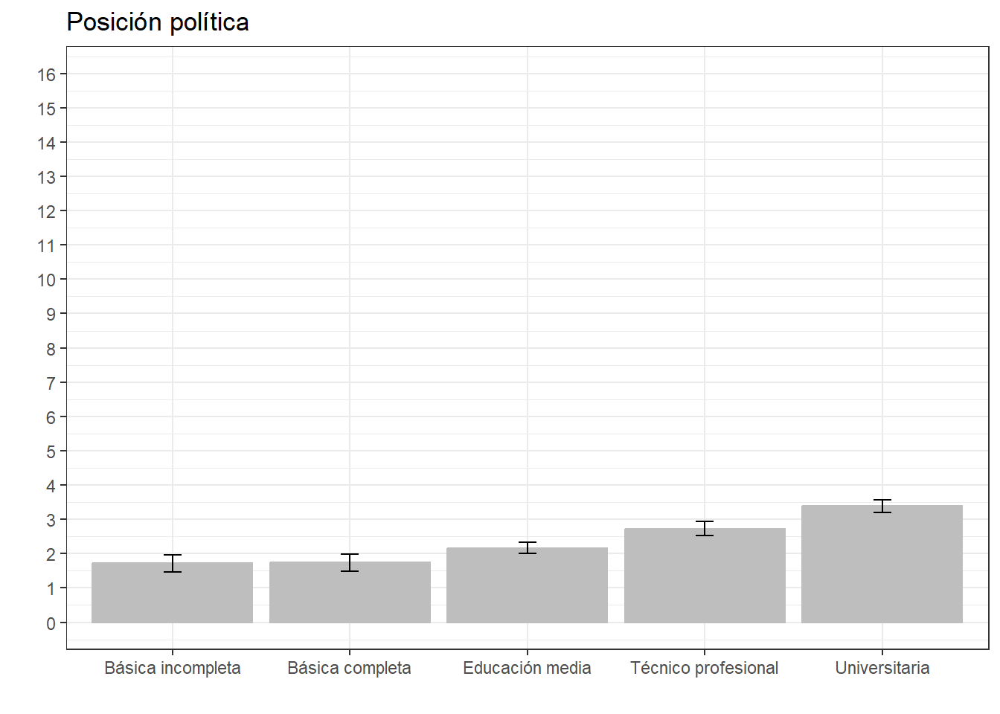
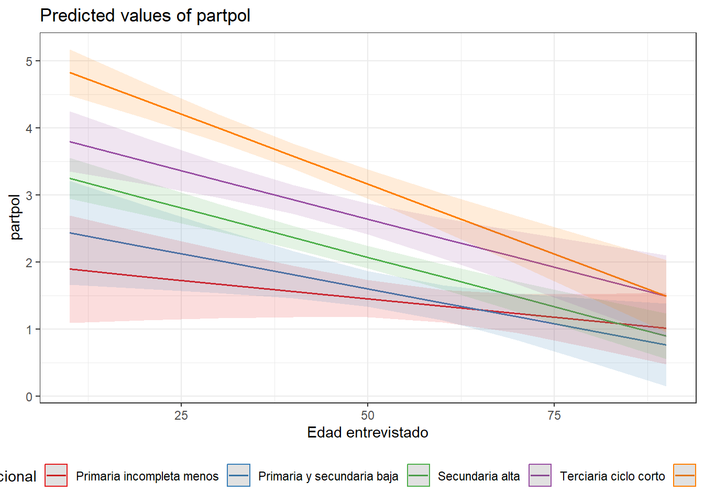

pacman::p_load(dplyr,
car,
summarytools,
sjPlot,
texreg,
corrplot,
ggplot2,
sjlabelled,
ggeffects)Práctico 05. Estimación de valores predichos
Métodos estadísticos para Ciencias Sociales III
Presentación
La siguiente práctica tiene el objetivo de repasar en la interpretación de coeficientes de correlación y la construcción de escalas, así como también en la interpretación de coeficientes de regresión lineal. Para ello, utilizaremos la base de datos de la tercera ola del Estudio Longitudinal Social del Chile 2018 con el objetivo de analizar los determinantes de la Participación Ciudadana.
La versión original de este ejercicio proviene del curso de Estadística multivariada versión 2022.
Librerías
Datos
El Estudio Longitudinal Social del Chile ELSOC, único en Chile y América Latina, consiste en encuestar a casi 3.000 chilenos, anualmente, a lo largo de una década. ELSOC ha sido diseñado para evaluar la manera cómo piensan, sienten y se comportan los chilenos en torno a un conjunto de temas referidos al conflicto y la cohesión social en Chile. La población objetivo son hombres y mujeres entre 15 y 75 años de edad con un alcance nacional, donde se obtuvo una muestra final de 3748 casos en el año 2018.
#Cargamos la base de datos desde internet
load(url("https://github.com/Kevin-carrasco/metod1-MCS/raw/main/files/data/elsoc2.RData"))O descargamos de acá y cargamos de manera local.
Explorar datos
A partir de la siguiente tabla se obtienen estadísticos descriptivos que luego serán relevantes para realizar las transformaciones y análisis posteriores.
view_df(elsoc,max.len = 50)| ID | Name | Label | Values | Value Labels |
|---|---|---|---|---|
| 1 | sexo | Sexo entrevistado | 0 1 |
Hombre Mujer |
| 2 | edad | Edad entrevistado | range: 18-90 | |
| 3 | educ | Nivel educacional | 1 2 3 4 5 |
Primaria incompleta menos Primaria y secundaria baja Secundaria alta Terciaria ciclo corto Terciaria y Postgrado |
| 4 | pospol | Autoubicacion escala izquierda-derecha | 1 2 3 4 |
Derecha Centro Izquierda Indep./Ninguno |
| 5 | part01 | Frecuencia: Firma carta o peticion apoyando causa | 1 2 3 4 5 |
Nunca Casi nunca A veces Frecuentemente Muy frecuentemente |
| 6 | part02 | Frecuencia: Asiste a mbackground-color:#eeeeeeha o manifestacion pacifica |
1 2 3 4 5 |
Nunca Casi nunca A veces Frecuentemente Muy frecuentemente |
| 7 | part03 | Frecuencia: Participa en huelga | 1 2 3 4 5 |
Nunca Casi nunca A veces Frecuentemente Muy frecuentemente |
| 8 | part04 | Frecuencia: Usa redes sociales para opinar en temas publicos |
1 2 3 4 5 |
Nunca Casi nunca A veces Frecuentemente Muy frecuentemente |
| 9 | inghogar | Ingreso total del hogar | range: 30000-17000000 | |
| 10 | inghogar_t | Ingreso total del hogar (en tramos) | 1 2 3 4 5 6 7 8 9 10 11 12 13 14 15 16 17 18 19 20 |
Menos de $220.000 mensuales liquidos De $220.001 a $280.000 mensuales liquidos De $280.001 a $330.000 mensuales liquidos De $330.001 a $380.000 mensuales liquidos De $380.001 a $420.000 mensuales liquidos De $420.001 a $470.000 mensuales liquidos De $470.001 a $510.000 mensuales liquidos De $510.001 a $560.000 mensuales liquidos De $560.001 a $610.000 mensuales liquidos De $610.001 a $670.000 mensuales liquidos De $670.001 a $730.000 mensuales liquidos De $730.001 a $800.000 mensuales liquidos De $800.001 a $890.000 mensuales liquidos De $890.001 a $980.000 mensuales liquidos De $980.001 a $1.100.000 mensuales liquidos De $1.100.001 a $1.260.000 mensuales liquidos De $1.260.001 a $1.490.000 mensuales liquidos De $1.490.001 a $1.850.000 mensuales liquidos De $1.850.001 a $2.700.000 mensuales liquidos Mas de $2.700.000 a mensuales liquidos |
| 11 | tamhogar | Habitantes del hogar | range: 1-14 | |
Variable dependiente: participación política
plot_stackfrq(elsoc[,c("part01","part02","part03","part04")]) + theme(legend.position="bottom")
corrplot.mixed(cor(select(elsoc,part01,part02,part03,part04),
use = "complete.obs"))
elsoc$part01 <- car::recode(elsoc$part01, "1=0; 2=1; 3=2; 4=3; 5=4")
elsoc$part02 <- car::recode(elsoc$part02, "1=0; 2=1; 3=2; 4=3; 5=4")
elsoc$part03 <- car::recode(elsoc$part03, "1=0; 2=1; 3=2; 4=3; 5=4")
elsoc$part04 <- car::recode(elsoc$part04, "1=0; 2=1; 3=2; 4=3; 5=4")
elsoc <- elsoc %>% mutate(partpol=rowSums(select(., part01,part02,part03,part04)))
summary(elsoc$partpol) Min. 1st Qu. Median Mean 3rd Qu. Max. NA's
0.000 0.000 0.000 1.473 2.000 16.000 8 Regresión lineal
veamos primero las diferencias de usar cada tipo de variable de ingreso
fit01<- lm(partpol~sexo,data=elsoc)
fit02<- lm(partpol~sexo+edad,data=elsoc)
fit03<- lm(partpol~sexo+edad+pospol,data=elsoc)
labs02 <- c("Intercepto","Sexo (mujer=1)","Edad",
"Centro (ref. derecha)","Izquierda","Idep./Ninguno")screenreg(list(fit01,fit02,fit03),custom.coef.names = labs02)knitreg(list(fit01,fit02,fit03),
custom.model.names = c("Modelo 1","Modelo 2","Modelo 3"),
custom.coef.names = c("Intercepto",
"Sexo (mujer=1)",
"Edad",
"Centro (ref. derecha)",
"Izquierda",
"Indep./Ninguno"))| Modelo 1 | Modelo 2 | Modelo 3 | |
|---|---|---|---|
| Intercepto | 1.56*** | 3.62*** | 4.53*** |
| (0.06) | (0.12) | (0.13) | |
| Sexo (mujer=1) | -0.13 | -0.08 | -0.00 |
| (0.08) | (0.07) | (0.07) | |
| Edad | -0.04*** | -0.04*** | |
| (0.00) | (0.00) | ||
| Centro (ref. derecha) | -1.06*** | ||
| (0.10) | |||
| Izquierda | -1.11*** | ||
| (0.11) | |||
| Indep./Ninguno | -1.67*** | ||
| (0.10) | |||
| R2 | 0.00 | 0.09 | 0.16 |
| Adj. R2 | 0.00 | 0.09 | 0.16 |
| Num. obs. | 3740 | 3740 | 3656 |
| ***p < 0.001; **p < 0.01; *p < 0.05 | |||
El Modelo 1 indica que las mujeres participan 0.13 unidades menos en comparación con los hombres, sin embargo, esta relación no es estadísticamente significativa (p>0.05).
El Modelo 2 indica que por cada unidad que aumenta la edad, la participación política disminuye en promedio 0.04 unidades, con un 99.9% de significación estadístico y manteniendo el sexo constante. Esta relación es consistente en los otros dos modelos.
En el Modelo 3 que incluye la posición política de los/as encuestados, la participación política de las personas de izquierda, centro o independiente/ninguno es menor en comparación con las personas de derecha, con una significación estadística del 99.9%, manteniendo el resto de las variables constantes.
Cálculo de valores predichos
Paquete ggeffects de R: últil para estimar Valores predichos a partir de modelos de regresión
Combinado con ggplot2, se pueden generar gráficos que muestran de modo más intuitivo la relación entre variables
ggeffects::ggpredict(fit03, terms = c("sexo")) %>%
ggplot(aes(x=x, y=predicted)) +
geom_bar(stat="identity", color="grey", fill="grey")+
geom_errorbar(aes(ymin = conf.low, ymax = conf.high), width=.1) +
labs(title="Sexo", x = "", y = "") +
theme_bw() +
scale_x_continuous(name = "",
breaks = c(0,1),
labels = c("Hombre", "Mujer"))+
scale_y_continuous(limits = c(0,16),
breaks = seq(0,16, by = 1))
ggeffects::ggpredict(fit03, terms = c("pospol")) %>%
ggplot(aes(x=x, y=predicted)) +
geom_bar(stat="identity", color="grey", fill="grey")+
geom_errorbar(aes(ymin = conf.low, ymax = conf.high), width=.1) +
labs(title="Posición política", x = "", y = "") +
theme_bw() +
scale_x_discrete(name = "",
labels = c("Derecha", "Centro", "Izquierda", "Independiente/ninguno")) +
scale_y_continuous(limits = c(0,16),
breaks = seq(0,16, by = 1))
ggeffects::ggpredict(fit03, terms="edad") %>%
ggplot(mapping=aes(x = x, y=predicted)) +
labs(title="Edad", x = "", y = "")+
theme_bw() +
geom_smooth()+
geom_ribbon(aes(ymin = conf.low, ymax = conf.high), alpha = .2, fill = "black") +
scale_x_continuous(breaks = seq(0,100, by = 10))+
scale_y_continuous(limits = c(0,16),
breaks = seq(0,16, by = 1))`geom_smooth()` using method = 'loess' and formula = 'y ~ x'
Interacciones
fit04<- lm(partpol~sexo+edad+pospol*edad,data=elsoc)
sjPlot::tab_model(fit03,fit04, show.ci = FALSE, pred.labels=c("Intercepto",
"Sexo (mujer=1)",
"Edad",
"Centro (ref. derecha)",
"Izquierda",
"Indep./Ninguno",
"Centro * Edad",
"Izquierda * Edad",
"Indep./Ninguno * Edad"))| partpol | partpol | |||
|---|---|---|---|---|
| Predictors | Estimates | p | Estimates | p |
| Intercepto | 4.53 | <0.001 | 6.05 | <0.001 |
| Sexo (mujer=1) | -0.00 | 0.949 | -0.01 | 0.846 |
| Edad | -0.04 | <0.001 | -0.08 | <0.001 |
| Centro (ref. derecha) | -1.06 | <0.001 | -2.93 | <0.001 |
| Izquierda | -1.11 | <0.001 | -2.72 | <0.001 |
| Indep./Ninguno | -1.67 | <0.001 | -3.95 | <0.001 |
| Centro * Edad | 0.04 | <0.001 | ||
| Izquierda * Edad | 0.04 | <0.001 | ||
| Indep./Ninguno * Edad | 0.05 | <0.001 | ||
| Observations | 3656 | 3656 | ||
| R2 / R2 adjusted | 0.159 / 0.158 | 0.175 / 0.174 | ||
En comparación con las personas de Derecha, el efecto negativo de la edad no es tan pronunciado en personas de Centro, Izquierda o independientes.
sjPlot::plot_model(fit04, type = "int") +
theme_bw() +
theme(legend.position = "bottom")
En el fondo lo que muestra el gráfico es que el efecto negativo de la edad es mucho mayor en personas de derecha. O el efecto negativo de la edad es más tenue en personas de centro, izquierda o independientes. U otra opción aún: los jóvenes de derecha son los que más participan.
Ejercicios
1- Estima un nuevo modelo de regresión lineal múltiple que incluya como predictores: sexo, edad, posición política y nivel educacional.
fit05<- lm(partpol~sexo+edad+pospol+educ,data=elsoc)
sjPlot::tab_model(fit05,
show.ci=FALSE)| partpol | ||
|---|---|---|
| Predictors | Estimates | p |
| (Intercept) | 3.09 | <0.001 |
| Sexo entrevistado | 0.04 | 0.572 |
| Edad entrevistado | -0.03 | <0.001 |
| Autoubicacion escala izquierda-derecha: Centro |
-0.96 | <0.001 |
| Autoubicacion escala izquierda-derecha: Izquierda |
-1.09 | <0.001 |
| Autoubicacion escala izquierda-derecha: Indep/Ninguno |
-1.39 | <0.001 |
| Nivel educacional: Primaria y secundaria baja |
0.02 | 0.867 |
| Nivel educacional: Secundaria alta |
0.45 | <0.001 |
| Nivel educacional: Terciaria ciclo corto |
1.01 | <0.001 |
| Nivel educacional: Terciaria y Postgrado |
1.67 | <0.001 |
| Observations | 3651 | |
| R2 / R2 adjusted | 0.209 / 0.207 | |
Con base en este modelo crea un gráfico de valores predichos para la variable de nivel educacional.
ggeffects::ggpredict(fit05, terms = c("educ")) %>%
ggplot(aes(x=x, y=predicted)) +
geom_bar(stat="identity", color="grey", fill="grey")+
geom_errorbar(aes(ymin = conf.low, ymax = conf.high), width=.1) +
labs(title="Posición política", x = "", y = "") +
theme_bw() +
scale_x_discrete(name = "",
labels = c("Básica incompleta", "Básica completa", "Educación media", "Técnico profesional", "Universitaria")) +
scale_y_continuous(limits = c(0,16),
breaks = seq(0,16, by = 1))
2- Estima un nuevo modelo de regresión que incluya un término de interacción entre edad y nivel educacional
fit06<- lm(partpol~sexo+edad+pospol+educ*edad,data=elsoc)
sjPlot::tab_model(fit06,
show.ci=FALSE)| partpol | ||
|---|---|---|
| Predictors | Estimates | p |
| (Intercept) | 1.98 | <0.001 |
| Sexo entrevistado | 0.04 | 0.536 |
| Edad entrevistado | -0.01 | 0.163 |
| Autoubicacion escala izquierda-derecha: Centro |
-0.95 | <0.001 |
| Autoubicacion escala izquierda-derecha: Izquierda |
-1.09 | <0.001 |
| Autoubicacion escala izquierda-derecha: Indep/Ninguno |
-1.39 | <0.001 |
| Nivel educacional: Primaria y secundaria baja |
0.64 | 0.340 |
| Nivel educacional: Secundaria alta |
1.54 | 0.003 |
| Nivel educacional: Terciaria ciclo corto |
2.08 | <0.001 |
| Nivel educacional: Terciaria y Postgrado |
3.24 | <0.001 |
| edad:educ2 | -0.01 | 0.391 |
| edad:educ3 | -0.02 | 0.034 |
| edad:educ4 | -0.02 | 0.076 |
| edad:educ5 | -0.03 | 0.001 |
| Observations | 3651 | |
| R2 / R2 adjusted | 0.212 / 0.209 | |
Grafica la interacción estimada en este modelo
sjPlot::plot_model(fit06, type = "int") +
theme_bw() +
theme(legend.position = "bottom")
3- Interpreta los gráficos elaborados.
Gráfico 1: a mayor educación, más participación política
Gráfico 2: el efecto de la edad se mantiene negativo para todos los grupos educacionales. Los jóvenes con educación universitaria son quienes más participan.